Susanne CLAUS · DTIS, ONERA, Université Paris-Saclay, Palaiseau, France
Lecture at MINES Paris – PSL
25/11/2026
90-minute lecture. Audience: second-year MINES Paris engineers who met FEM this week (weak form and Galerkin, meshes, P1/P2 and assembly, convergence and cost). Goal: show what changes when the mesh does not fit the geometry. Replace [date of the lecture].
2. Overview
Overview
Minutes
Block
Question we answer
0–8
Opening
Why cut, and the three examples
8–17
Example 1 · Steps 1–2
Level set and cell classification: describing Ω without a mesh
17–26
Example 1 · Step 3
Integration on cut cells
26–36
Example 1 · Step 4
Boundary conditions: Lagrange multipliers or Nitsche
36–51
Example 1 · Step 5
Small cuts degrade the matrix; what repairs it?
51–55
Example 1 · Step 6
Solve, look, and convergence
55–67
Example 2 · image
From a scan to a level set, solved in the solid matrix
67–80
Example 3 · rotor
A rotor from level sets, turned through a hot jet, tuned
80–90
Close
Try it, applications, key ideas, questions
Cut finite element methods · MINES Paris – PSL
2
One minute. The story of the lecture: three examples, and one long one first. Why cut, the idea, and the three examples (8 minutes). Then Example 1, Poisson on a flower, built step by step, each step explained and then written in code with minicut: level set and classification, quadrature, Nitsche, the conditioning problem and its two remedies, solve and convergence. Then the same steps run on an image of a porous specimen (solved in the solid matrix) and on a rotor built from level sets, turned through a hot jet and tuned. Say that this lecture builds on the week: weak form and Galerkin (lecture 1), meshes, P1 and assembly (lecture 2), convergence and cost (lecture 3). Timings are estimates for 90 minutes; the conditioning step can be shortened by skipping the mode slide. Announce the two short exercises.
3. Two ways to describe a geometry
Two ways to describe a geometry
Meshed geometry
The boundary is made of mesh edges: the mesh follows the shape. A new shape means a new mesh.
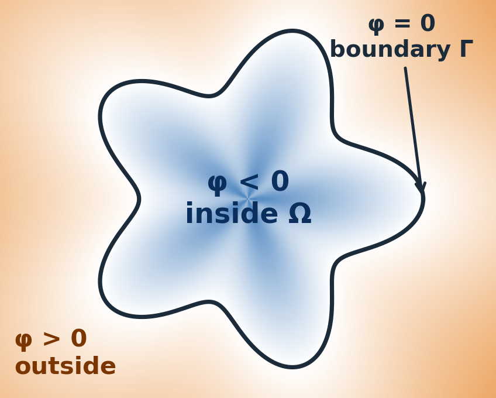
Level set function φ
A function φ(x) with a sign: φ < 0 inside Ω, φ > 0 outside, φ = 0 on the boundary Γ. A disc of radius R: φ(x) = |x − c| − R.
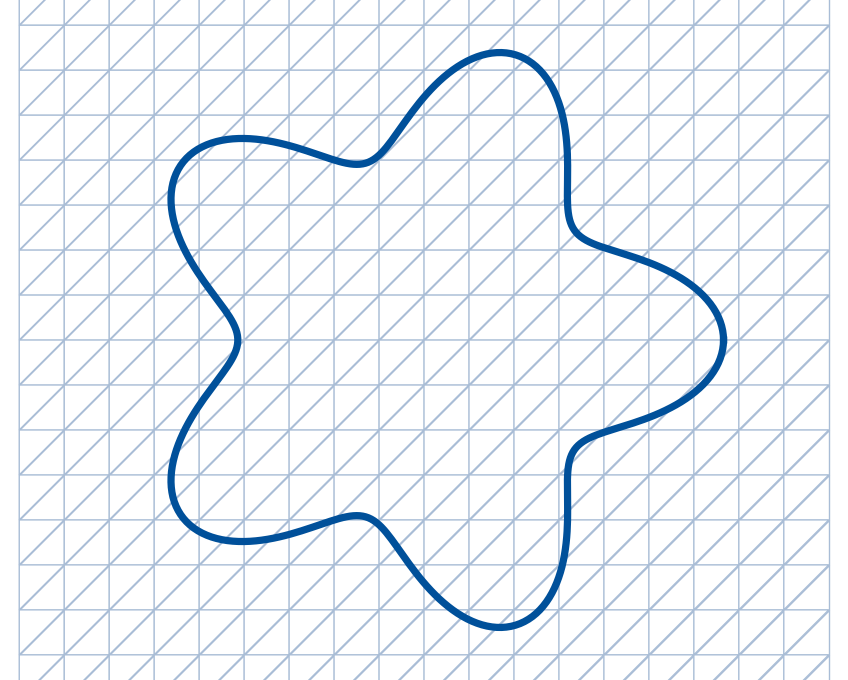
Level set on a simple mesh
The mesh is a plain grid that ignores Ω. The boundary cuts through cells, and φ tells us where.
Cut finite element methods · MINES Paris – PSL
3
Two minutes, no hurry: this slide prepares the pipeline on the next one. Left: the way they know from this week. The mesh is built to fit Ω, so the boundary is a list of mesh edges, and a new shape needs a new mesh. Middle: the other way. A level set function φ is just a function of position with a sign: negative inside, positive outside, zero on the boundary. Ask: for a disc, what is φ? Answer: distance to the centre minus the radius. To test whether a point is inside, evaluate φ and look at its sign; no mesh is needed for that. Right: the level set lives on a simple mesh that knows nothing about Ω. The boundary now cuts through cells, and that is where all the new work of the lecture sits. Next slide: the whole finite element pipeline with a fitted mesh and with a level set.
4. The Finite Element algorithm: where geometry enters
The Finite Element algorithm: where geometry enters
Classical FEM: the mesh fits Ω
Geometry is meshed
1
→
Choose elements: P1, P2
2
→
Quadrature rules, assemble K, F
3
→
Fix the boundary nodes
4
→
Solve K U = F
5
→
Solution uh
6
Cut FEM: background mesh + level set function
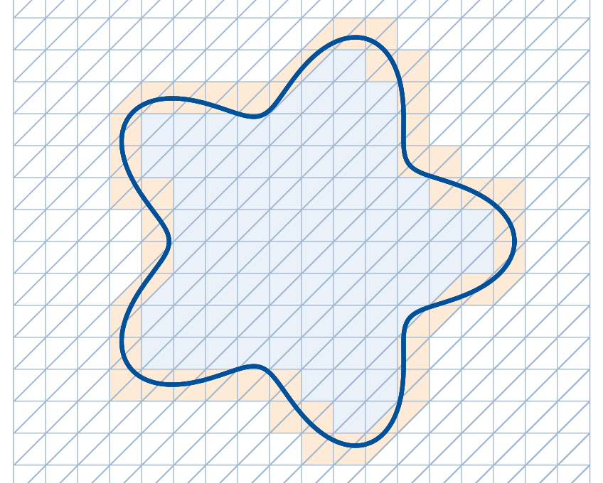
Background mesh + level set φ
1
→
Same elements, active mesh
2
→
Quadrature on Ω∩T and Γ∩T
3
→
Nitsche + ghost penalty
4
→
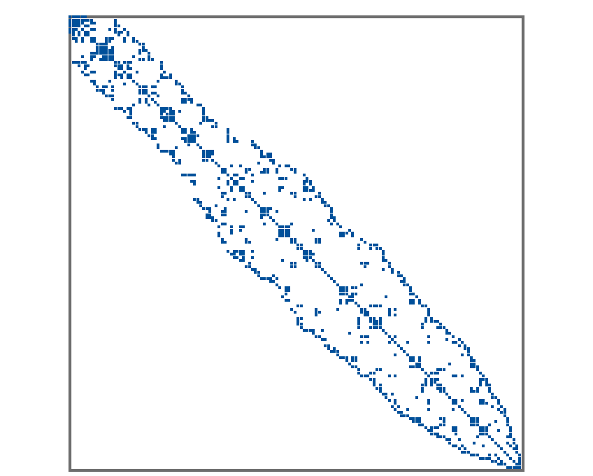
Solve K U = F
5
→
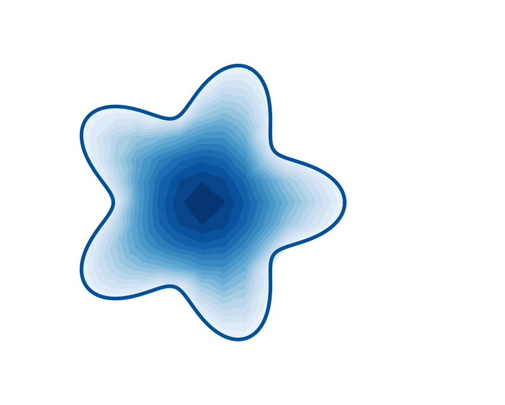
Solution uh on Ω
6
The orange steps use the shape of Ω. Cut FEM replaces exactly these three; the linear algebra stays the same.
Cut finite element methods · MINES Paris – PSL
4
Three minutes. Top row: the classical six-step algorithm from the end of lecture 2, one picture per step: a mesh that fits the boundary, the element type, Gauss rules on whole triangles and assembly of K and F, fixing the values at the boundary nodes, the sparse solve, and the reconstruction of u_h. Ask the room: which of these steps use the geometry? Answer: the orange ones, 1, 3 and 4. Bottom row: the same pipeline for a cut FEM. The mesh no longer fits, only a level set tells us where the boundary is. The integrals run over the cut pieces Ω∩T and Γ∩T. The boundary condition is imposed weakly with Nitsche, and the ghost penalty keeps the system stable. Steps 2, 5 and 6 keep their form: the same elements on the active mesh, the same sparse solve, the same reconstruction. We build each orange step in turn.
5. Meshing challenges
Meshing challenges
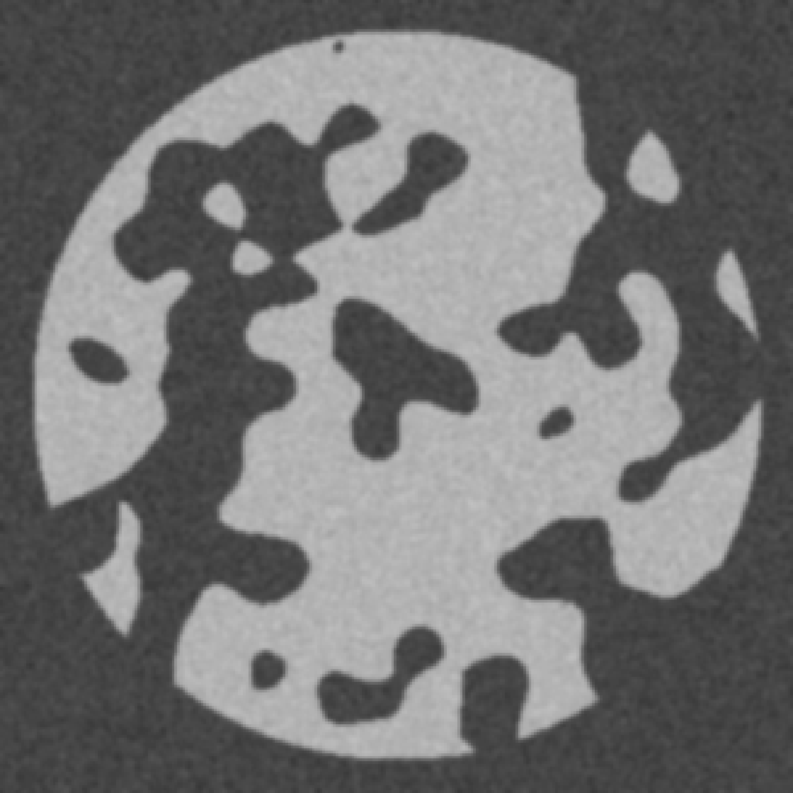
Scans and images
Pores, cracks and phases from CT or microscopy: the geometry is described in pixels.
Moving geometry
the shape and topology changes, merges or splits, a fitted mesh has to be rebuilt each time
Implicit shapes
Unions, blends and offsets of simple primitives: easy to describe, hard to mesh
Cut finite element methods · MINES Paris – PSL
5
Four minutes. Start from the question, not from the method: what if my geometry is a scan, a shape that moves and changes topology, or a shape produced by an optimiser? Left: an image generated for this lecture, similar to a micro-CT slice of a porous material: light solid matrix, dark pores (synthetic, not a real scan). Middle: an animation made for this lecture (two bubbles merging, described by a level set): the background mesh never changes, only the cut cells in orange follow the boundary. With a fitted mesh the two bubbles would need a remesh at every step, and the merge itself is a change of topology. Right: a cluster of spheres built from implicit primitives, also from that talk. Ask the students how they would mesh the left image with the methods of this week: every pore needs its own boundary, and the mesh must follow it. We will solve in the solid matrix, with the pores empty.
6. Three examples we will build, step by step
Three examples we will build, step by step
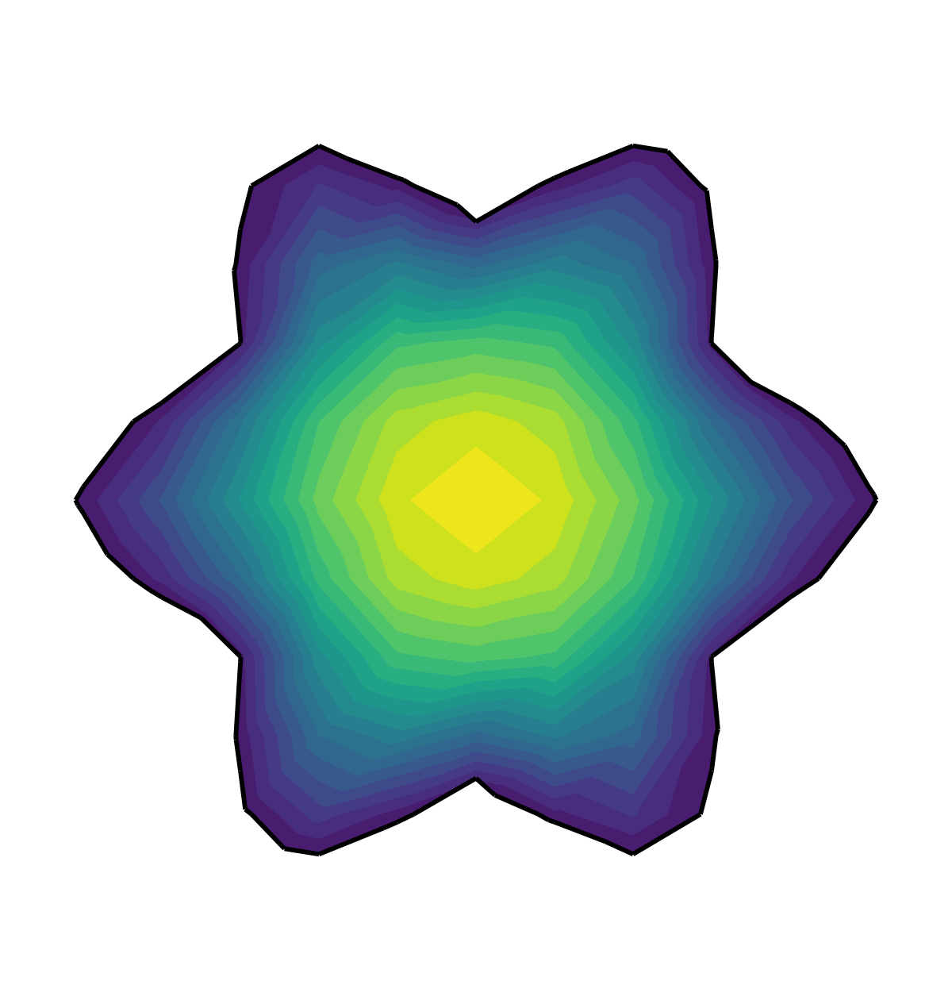
1. Poisson on a flower
Every step explained: level set, cut cells, quadrature, Nitsche, small cuts, convergence
2. A porous specimen
Pixels → signed distance → level set φ, then solve in the matrix, with the pores empty
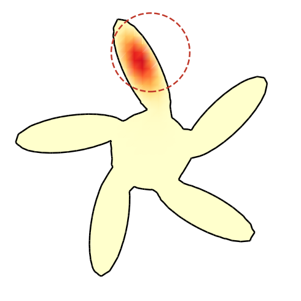
3. A rotor: build, turn, tune
Union of turned blades, turned through a hot-gas jet by changing φ only, then the widest blade that stays below a temperature limit
Cut finite element methods · MINES Paris – PSL
6
Two minutes. The three situations of the previous slides: scans, implicit shapes, moving shapes. We build three examples, all with the Python code of this lecture (minicut: numpy, scipy, matplotlib, nothing to install). Example 1 is the long one: Poisson on a flower, built step by step, where each step is first explained and then written in code: level set, cut and classify, quadrature, Nitsche, small cuts and their repair, solve, convergence. Example 2 repeats the same steps for a porous specimen given as an image: we solve in the solid matrix, the pores are empty (they could also be filled with a second material, which is an interface problem). Example 3 is a five-bladed rotor built from simple level sets with union, turned through a hot-gas jet that is fixed in space by changing the level set only, and finally tuned: find the widest blade whose peak temperature stays below a limit at every angle (a first shape optimisation). In all of them the background mesh never changes, the orange line is the boundary, the grey lines are the mesh.
7. The idea: mesh a box, cut the geometry out of it
The idea: mesh a box, cut the geometry out of it
Keep a simple background mesh and describe Ω separately. Each fitted-mesh assumption then becomes a problem with a tool.
PROBLEM
Ω is not a mesh
TOOL
Level set φ
PROBLEM
Cells are only partly inside Ω
TOOL
Cut-cell quadrature
PROBLEM
No nodes on the boundary
TOOL
Nitsche’s method
PROBLEM
Tiny cuts ruin the matrix
TOOL
Ghost penalty or aggregation
7
Three minutes. This is the roadmap of the lecture, one block per column, and also the order of the steps of Example 1: the level set and the classification of cells (8 to 17 min), integration on cut cells (17 to 26), Nitsche (26 to 36), small cuts, conditioning and the two remedies (36 to 51), then solve and convergence (51 to 55). The same steps are then repeated for two more examples, an image (55 to 67) and a rotor (67 to 80). Stress that nothing else changes: the Galerkin method, the element spaces and the solver are those of the week.
8. The algorithm with cut cells
The algorithm with cut cells
1
Background mesh of a simple box, level set φ on it
Changed
2
Choose the element type (P1, P2, …)
3
Quadrature on T ∩ Ω and Γ ∩ T, assembly on active cells
Changed
4
Dirichlet conditions: Nitsche terms on Γ
Changed
+
Stabilise small cuts: ghost penalty or aggregation
New
5
Solve the sparse system K U = F
6
Reconstruct uh from the DOFs and the shape functions
Cut finite element methods · MINES Paris – PSL
8
Three minutes. Same slide as the recap, now with the answers. Steps 2, 5 and 6 are untouched: same element spaces, same solver, same reconstruction. Steps 1, 3, 4 changed in the way the next blocks will show, and one new step stabilises small cuts. Say explicitly: the Galerkin method and its best-approximation property (lecture 1) are what we are still doing. From here on we go through these steps on one example, the flower, and every step ends with the code in minicut.
9. Example 1 · The goal: Poisson on a flower
Example 1 · The goal: Poisson on a flower
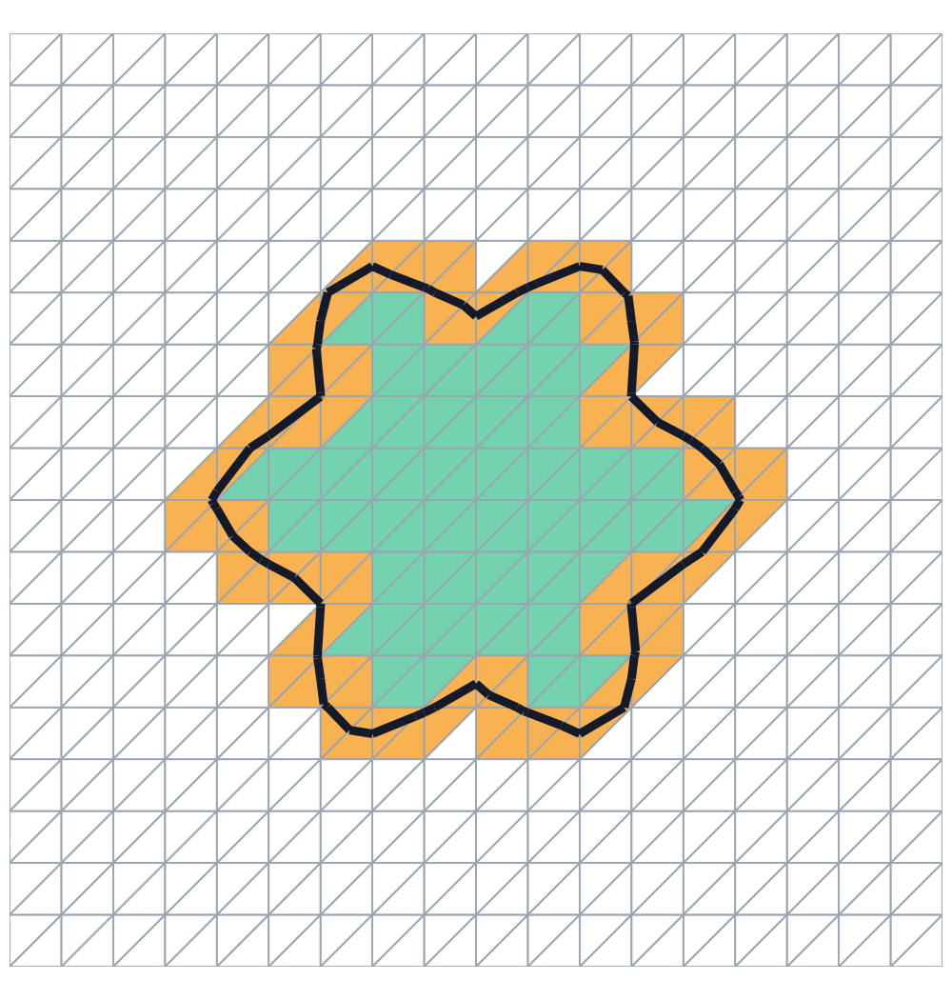
Background mesh of 18 × 18 squares (each split in two triangles); the boundary Γ is the black curve. Green: inside Ω, orange: cut by Γ.
−Δu = 1 in Ω, u = 0 on Γ, P1 elements, solved on the active cells only.
Cut finite element methods · MINES Paris – PSL
9
Three minutes. Show the result before any theory. The problem is the Poisson problem of the week with a flower-shaped domain: the boundary is not made of mesh edges. The background mesh is a regular grid of 18 by 18 squares, each split into two triangles. Green cells are inside, orange cells are cut by the boundary, white cells are never touched. The solution on the right lives on the green and orange cells and is zero on the flower boundary (imposed weakly, see later). Promise: by the end of this example they will know every step that produced this picture, and each step ends with the lines of code that do it, in minicut, the small Python package of the lecture. Figures made with minicut (tools/lecture_figures.py).
10. Describing Ω with a level set
Cut finite element methods · MINES Paris – PSL
10
Describing Ω with a level set
Domain
Boundary
Normal
Curvature
φ(x, y) is any function we can evaluate: a formula, a distance to a boundary (CAD, mesh)
Disc: φ = √((x − cx)² + (y − cy)²) − R
On the mesh, φ is a finite element function: we only need its values at the nodes
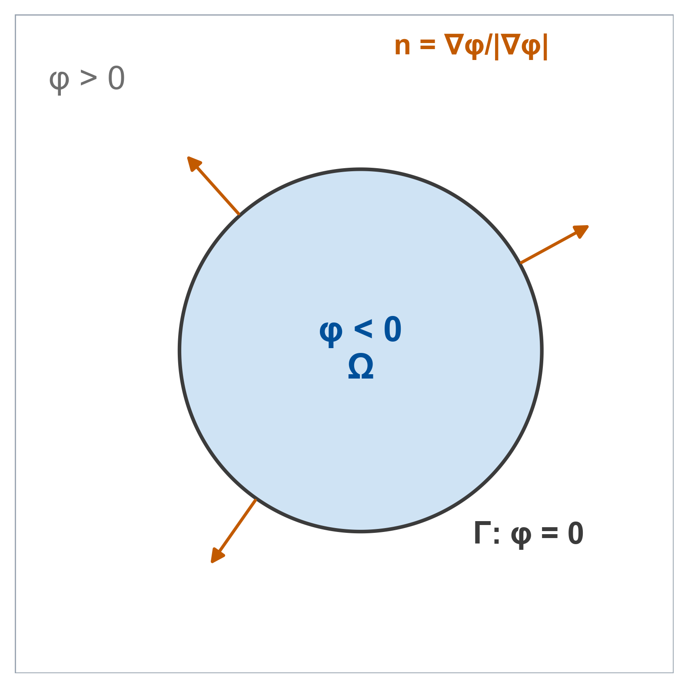
Sign convention: negative inside Ω
The graph of φ: Γ is where it crosses zero
Three minutes. Sign convention: negative inside. Left: the definition, the normal and the curvature (the divergence of the normal; it matters later for surface tension and for curved boundaries). Middle: a disc, with the outward normals. Right: the graph of a level-set function of the flower; the boundary is where the surface crosses zero. The level set is represented on the background mesh as a finite element function, as in the flower of Example 1 (six petals). Mention that the signed distance is the common choice but any function with the right zero set works. Link to lecture 1: the boundary is now a zero set, not a list of mesh edges.
Two minutes. Step 1 of the flower example, in minicut, the Python code of the notebook: a structured triangle mesh of the box [-1, 1]² (18 × 18 squares, 648 triangles) and a level set. Everything about the geometry is in phi, here the values of a formula at the nodes; it could equally come from an image (Example 2) or from a combination of shapes (Example 3). minicut stores phi as a P1 function, so the zero set is piecewise linear on the mesh.
12. Classifying the cells of the background mesh
Classifying the cells of the background mesh
Inside
φ < 0 at every vertex: an ordinary cell
Cut
φ changes sign: the boundary crosses the cell, special treatment
Outside
φ > 0 at every vertex: ignored
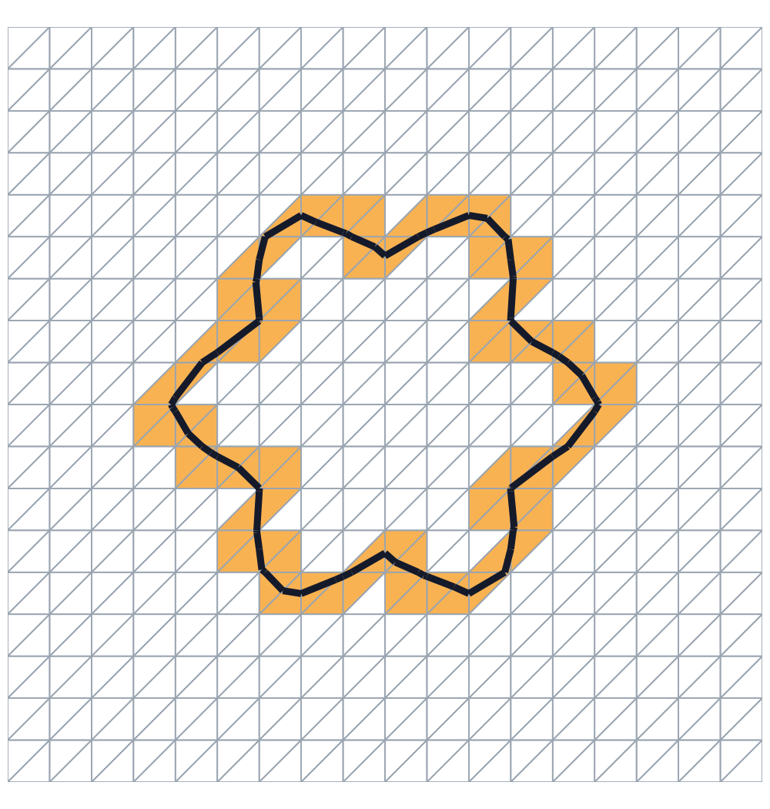
Cut cells in orange
Cut finite element methods · MINES Paris – PSL
12
Three minutes. The classification only needs the sign of φ at the vertices of each cell, so it is one cheap pass over the mesh. A small caveat to mention only if asked: a thin feature of Ω can pass between vertices without changing any sign; the mesh must resolve the geometry at least roughly.
13. The active mesh
The active mesh
Active mesh = inside cells + cut cells
Unknowns live on active cells only; outside cells are never assembled
The cost follows the size of Ω, not the size of the box
Watch this
Vertices of cut cells can lie outside Ω. Their DOFs are active, and they will cause trouble in a few minutes.
Cut finite element methods · MINES Paris – PSL
13
Two minutes. The finite element space is the usual P1 (or P2) space, restricted to the active mesh. Nothing new in the spaces. The warning about DOFs outside Ω is the seed for the conditioning block a few slides further on.
14. Exercise: classify the cells
Exercise: classify the cells
Your turn, 2 minutes
Background grid of 6 × 6 unit cells, origin at the centre, φ(x) = |x| − 2.
Count the inside, cut and outside cells
Which cells need special treatment in the assembly loop?
Answer: 4 inside · 12 cut · 20 outside
Cut finite element methods · MINES Paris – PSL
14
Two minutes of silent work, one minute of answers. Answer: 4 inside, 12 cut, 20 outside (counted with a script). The 12 cut cells are the only ones that need new code; the 4 inside cells are assembled as in lecture 2. Remark: the number of cut cells scales like 1/h in 2D, while the total scales like 1/h squared, so cut cells are a vanishing fraction under refinement.
15. Example 1 · Step 2/6: cut and classify
Example 1 · Step 2/6: cut and classify
geom = mc.CutGeometry(mesh, phi, order=2)
t = geom.cell_type
inside_cells = np.where(t == mc.INSIDE)[0]
cut_cells = np.where(t == mc.CUT)[0]
active_cells = geom.active_cells
# t: from the signs of phi at the vertices
# INSIDE all < 0
# CUT the signs differ
# OUTSIDE all > 0
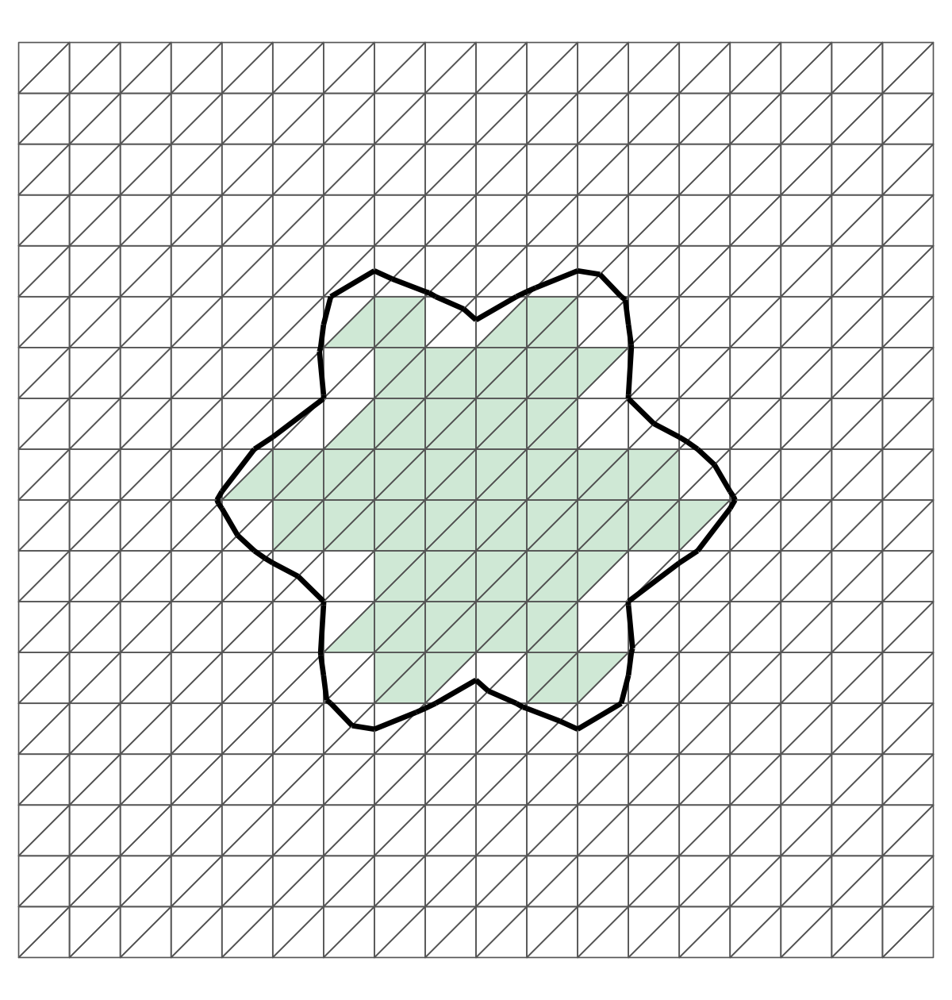
inside_cells (82)
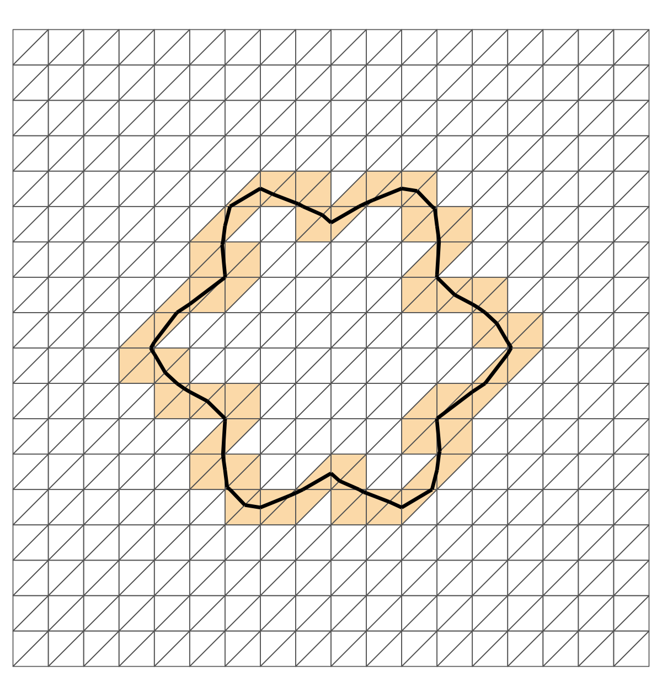
cut_cells (82)
Cut finite element methods · MINES Paris – PSL
15
Two minutes. mc.CutGeometry(mesh, phi) does the whole cut in one call: it classifies every cell from the signs of phi at its vertices, cuts the cut cells into sub-triangles, and builds the quadrature rules of the next step. Its attributes are the cell lists: cell_type is INSIDE, CUT or OUTSIDE for every cell, active_cells is inside and cut together, the active mesh of the earlier slide. Here 82 cells are inside, 82 are cut and 484 are outside.
16. Integrating over a cut cell
Integrating over a cut cell
Lecture 2: integrals are computed with Gauss points on the whole cell
On a cut cell the domain is T ∩ Ω, but the Gauss points ignore the boundary
The integrand is discontinuous, so a higher-order Gauss rule does not cure it
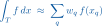
0.875
exact area of T ∩ Ω
0.75
from 2 × 2 Gauss points: 14 % too small
Unit cell, Ω = { x + y < 1.5 }
Cut finite element methods · MINES Paris – PSL
16
Three minutes. Recall lecture 2 (reference element, quadrature in practice) and lecture 1 (efficient quadrature rules for complex domains are not readily available). Example: the line x + y = 1.5 cuts a corner off the unit square. The 2 by 2 Gauss points are at 0.2113 and 0.7887. Three of them satisfy x + y < 1.5, so the rule with an inside test gives 3 × 0.25 = 0.75, against the exact 7/8 = 0.875. The point (0.7887, 0.7887) is the one outside. The error does not vanish with more points because the integrand (indicator times f) is discontinuous.
17. Cutting one cell: from signs to quadrature points
Cutting one cell: from signs to quadrature points
Signs decide
φ is P1 on the cell: a sign change between two vertices means the edge is cut
Cut points
on each cut edge, the zero of the linear interpolant of φ
Sub-triangles
T ∩ Ω is split into triangles; Γ ∩ T is a segment
Gauss on pieces
a standard rule on each piece, mapped to T; n = ∇φ/|∇φ| on Γ ∩ T
Cut finite element methods · MINES Paris – PSL
17
Four minutes. One triangle, cut by a P1 level set. Only the signs at the three vertices matter: here one vertex is inside and two are outside. The zero of the linear interpolant on the two cut edges gives the two cut points. T intersect Omega is then a single triangle (when two vertices are inside it is a quadrilateral, split into two triangles). Each piece gets a standard Gauss rule, mapped to the cell: three points on this triangle, weight one third of the area each. The interface segment gets its own rule: two Gauss points, weights half the length each. With curved cuts (P2 level set) the pieces are curved and the rules are more involved; the idea is the same. The figure was drawn for this lecture, the rule shown is the simplest one.
18. Quadrature rules on the cut geometry
Quadrature rules on the cut geometry
Split T ∩ Ω into simplices, using a look-up table on the signs of φ
Put a Gauss rule on each piece and map the points to T
The interface Γ ∩ T gets its own points, weights and normal n
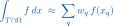
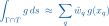
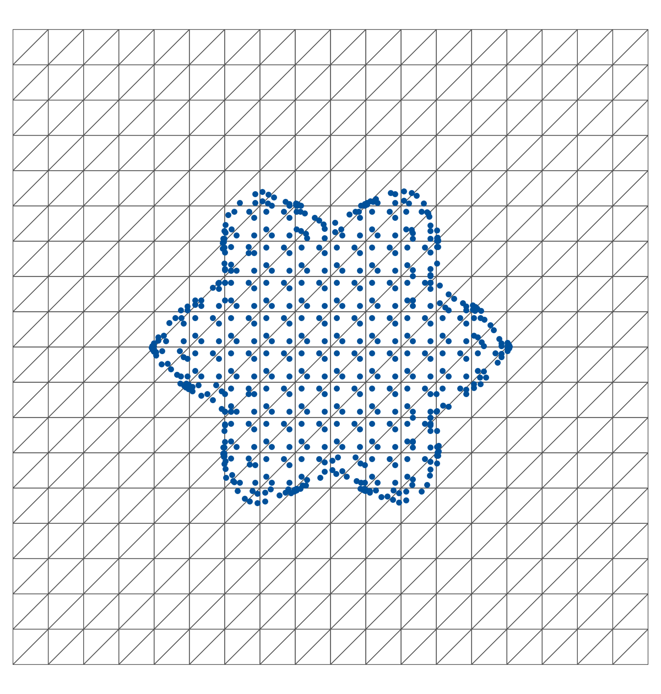
Volume points in Ω
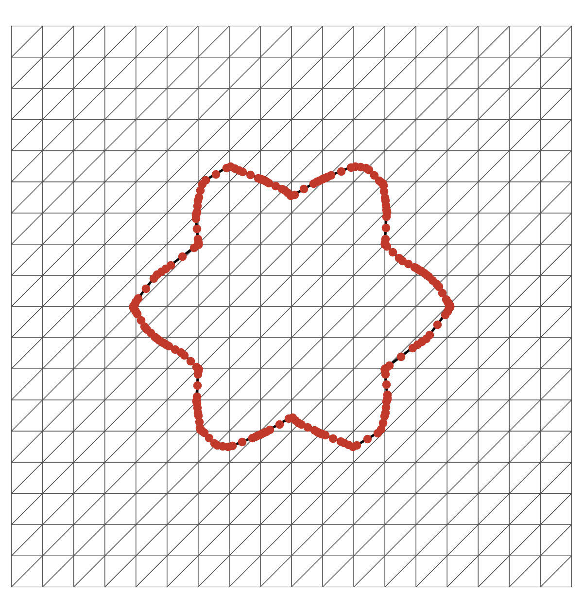
Interface points on Γ
Cut finite element methods · MINES Paris – PSL
18
Five minutes. Key message: once the rules exist, assembly is unchanged. The element routine receives (point, weight) pairs and does not care where they come from, exactly like Gauss points in lecture 2. In minicut the rules are two objects, geom.volume and geom.interface, produced when the mesh is cut; they hold the points, the weights and, on Γ, the normals. Geometry accuracy: with linear cuts the boundary is approximated to O(h squared); higher-order cutting is possible (mention the ray-based and subdivision approaches from the JSO talk if time allows). Interface points carry the normal n = grad(phi)/|grad(phi)|, which the next block uses.
19. Exercise: a cut cell by hand
Exercise: a cut cell by hand
T = [0, 1]², line x + y = 1.5
Your turn, 4 minutes
Cut T ∩ Ω into triangles and compute its area exactly
Compute the length of Γ ∩ T and the unit normal n
Where does the 14 % error of the 2 × 2 Gauss rule come from?
Answer: area 7/8 · length √2/2 ≈ 0.707 · n = (1, 1)/√2
Cut finite element methods · MINES Paris – PSL
19
Four minutes of work, two minutes for the answer. Exact area: the square minus the corner triangle with legs 0.5, so 1 minus 0.125 = 0.875 = 7/8; split the remaining pentagon into three triangles to mimic the quadrature construction. Interface: the segment runs from (0.5, 1) to (1, 0.5), length sqrt(0.5) = 0.707. Normal: gradient of phi = x + y − 1.5 is (1, 1), normalised to (1, 1)/sqrt(2). Question 3: the Gauss points sample a discontinuous integrand and one of the four weights is on the wrong side of the line, which is 0.25 of the cell instead of the true 0.125 removed.
20. Example 1 · Step 3/6: quadrature rules
Example 1 · Step 3/6: quadrature rules
vol = geom.volume
intf = geom.interface
# vol: points, weights on T ∩ Ω
# intf: points, weights, normals on Γ ∩ T
vol.points.shape # (606, 2)
intf.points.shape # (246, 2)
# integrals become sums:
# ∫_Ω f dx ≈ Σ_q w_q f(x_q)
np.sum(vol.weights) # |Ω_h| = 0.7316
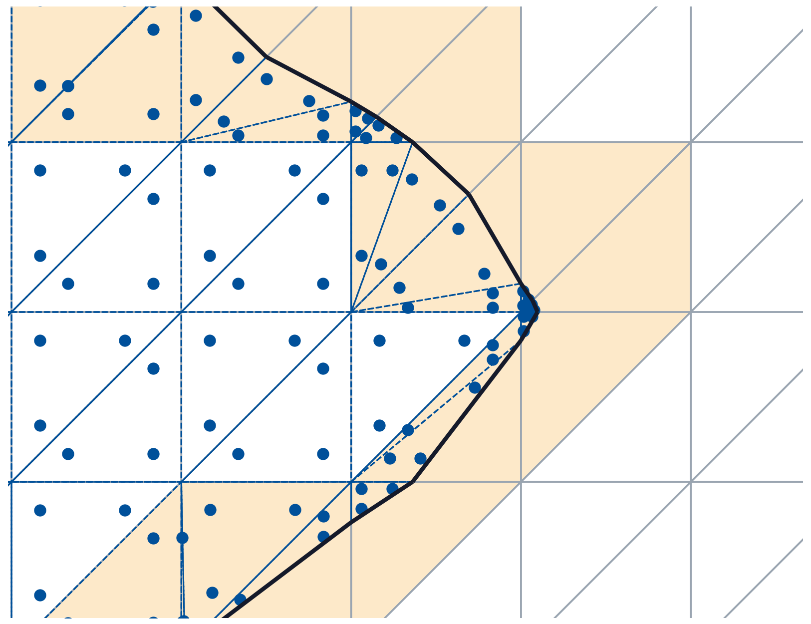
volume points: the pieces of T ∩ Ω near one petal
interface points
Cut finite element methods · MINES Paris – PSL
20
Two minutes. This is the step that replaces the Gauss rule of lecture 2. The rules were built by the constructor of the previous step: geom.volume holds the points and weights on the pieces T ∩ Ω (a three-point interior triangle rule, exact for degree 2, on every sub-triangle; the dense clusters at the boundary come from the thin sub-triangles of cut cells, see the zoom), geom.interface the Gauss points on the straight segments Γ ∩ T with the outward unit normal. With a P1 level set the cut is exact: the pieces are triangles and Γ is a segment in every cut cell. The sum of the volume weights is the area of the discrete flower, 0.7316, against 0.7355 for the smooth flower: the level set was interpolated on a mesh with h = 0.11, so the geometry error shrinks with the mesh like the rest.
21. Dirichlet conditions on a cut boundary
Dirichlet conditions on a cut boundary
Lecture 2 fixed the nodal values on ΓD and solved for the rest. Now no node lies on ΓD: the boundary runs through the cells.
Snap to nodes
Move the boundary to the nearest nodes and fix their values
The boundary moves by up to h: a first-order geometry error
Lagrange multipliers
Enforce u = g on Γ with extra unknowns
Saddle-point system; the spaces must be compatible
Nitsche’s method
Impose u = g weakly, inside the bilinear form
No extra unknowns, symmetric, consistent
Cut finite element methods · MINES Paris – PSL
21
Three minutes. Link to lecture 2 (Dirichlet conditions: assemble all nodes, fix UD, solve for Uf, a discrete lifting). With a cut boundary there is nothing to fix. Three options. Snapping destroys accuracy. Lagrange multipliers work but add unknowns and a compatibility condition. Nitsche keeps the system symmetric positive definite with the same unknowns, which is why it is the standard choice in cut methods. Neumann conditions are unchanged: they are natural in the weak form and only need the interface quadrature.
22. Lagrange multipliers: the derivation
Lagrange multipliers: the derivation
1 Constrained minimisation
Minimise the energy among functions with u = g on Γ. The multiplier λ is a new function on Γ.
2 Stationary point
Vary u: the weak form with an extra boundary term. Vary λ: the constraint, weakly.
3 What is λ?
Integrating by parts shows λ = −∂u/∂n on Γ: the flux through the boundary, often what we want to know.
The boundary term is ∫Γ (∂u/∂n + λ) v ds, so λ = −∂u/∂n.
Cut finite element methods · MINES Paris – PSL
22
Four minutes. First of the two classical alternatives to Nitsche. Minimise the energy with the constraint u = g on Gamma, and add a Lagrange multiplier lambda that lives on Gamma only. Taking the variation in u gives the usual weak form plus the term integral of lambda times v over Gamma; taking it in lambda gives the constraint in weak form. Integrating by parts shows that lambda is minus the normal derivative: the flux. This is physically meaningful, for instance the heat flux through the wall. The price is paid in the next slide. Sign convention: the Lagrangian here is energy minus work plus lambda times (u minus g).
23. Lagrange multipliers: discrete weak form and cost
Lagrange multipliers: discrete weak form and cost
Discrete weak form
Find (uₕ, λₕ) in Vₕ × Λₕ such that, for all (vₕ, μₕ) in Vₕ × Λₕ:
with the two bilinear forms
Matrix form
Choosing Λₕ
Λₕ lives on Γ only: piecewise polynomials on the cut boundary, for instance the traces of Vₕ functions on Γ.
Saddle-point system
Extra unknowns λ, a zero diagonal block, an indefinite matrix: not a plain CG problem.
Compatibility
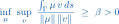
Λₕ must be compatible with Vₕ in this inf-sup sense. On a cut mesh, small cuts can break it: stabilisation is needed here too (e.g. Barbosa–Hughes).
Cut finite element methods · MINES Paris – PSL
23
Four minutes. The discrete version of the weak form of the previous slide. Choose a finite element space V_h on the background mesh and a multiplier space Lambda_h on the boundary Gamma only; find the pair (u_h, lambda_h) such that the first equation, the stiffness form a plus the coupling form b(v, lambda), equals the load, and the second equation, b(u, mu) = integral of g mu over Gamma, imposes the boundary condition weakly, for all test pairs. The two bilinear forms are the stiffness integral over Omega and the integral over Gamma of mu times v. In matrix form this is a block system with the stiffness matrix A, the coupling matrix B and a zero block: symmetric but indefinite. The spaces cannot be chosen independently: they must satisfy the inf-sup (LBB) condition with a constant beta independent of the mesh, otherwise the system is singular or the multiplier oscillates. On a cut mesh the cut cells have arbitrary shapes, so keeping the compatibility is delicate and in practice needs additional stabilisation. This is why Nitsche's method, which has no extra unknowns, became the default in cut methods. Theory only: no numerical experiment with multipliers is shown.
24. Nitsche’s method, derived from the weak form
Nitsche’s method, derived from the weak form
1
Weak form of lecture 1, now with v ≠ 0 on Γ: the boundary term stays
2
Symmetry: add a term that is zero for the exact solution, since u = g on Γ
3
Penalty: control u − g on Γ, with γ a constant and h the cell size
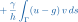
Consistent: the exact solution satisfies every added term. Symmetric: same matrix structure as lecture 2.
Cut finite element methods · MINES Paris – PSL
24
Six minutes, the one derivation of the lecture. Walk step by step from the weak form they saw in lecture 1: there we chose v = 0 on the Dirichlet boundary so the boundary integral vanished; now the test functions do not vanish on Γ, so the integral stays and we get a term with the flux. Step 2: the extra term is zero for the exact solution (consistency), and it makes the form symmetric. Step 3: without a penalty the form is not coercive. The penalty needs gamma large enough; how large depends on small cut cells, which is the next block. n is the outward unit normal; for Poisson, minus Laplacian u = f in Omega, u = g on Gamma.
gx = g(q.points[:, 0], q.points[:, 1]) # boundary data g(x_q)
local = - np.einsum("q,qi,qj->qij", w, lam, dn) # - ∫ ∂n u v
local += - np.einsum("q,qi,qj->qij", w, dn, lam) # - ∫ u ∂n v
local += np.einsum("q,qi,qj->qij", w * pen, lam, lam) # + γ/h ∫ u v
local_b = - (w * gx)[:, None] * dn + (w * pen * gx)[:, None] * lam # - ∫ g ∂n v + γ/h ∫ g v
minicut, γ = 40: local[q, i, j] with i the test and j the trial function, scattered into the matrix; the Ω term is mc.stiffness, mc.load
Cut finite element methods · MINES Paris – PSL
25
Five minutes. The code is the formula, in minicut. The interface rule gives the points x_q, weights w_q and normals n_q on Gamma; lam holds the P1 basis functions at those points and dn their normal derivatives. The three boundary terms of the left-hand side are three lines (consistency, symmetry, penalty) and the two data terms are the last line. The volume term is mc.stiffness (lecture 1, with the cut volume rule) and mc.load; local[q, i, j] is scattered into the global matrix by mc.assemble_matrix. These are the lines of mc.nitsche, which the students write in section 5 of the notebook. The ghost penalty term is added in the stability block.
26. Three ways to impose u = g on Γ
Three ways to impose u = g on Γ
Snap to nodes
Lagrange multiplier
Nitsche
Extra unknowns
none
λ on Γ
none
Matrix
SPD
symmetric, indefinite
symmetric, SPD with stabilisation
Consistent?
no: geometry error ~ h
yes
yes
Parameter
none
none, but λ space must fit
γ (penalty) and h
Gives the flux?
no
yes, directly (λ)
from ∇u · n, with a correction
Weak point
first-order geometry error
inf-sup, extra unknowns
needs γ large enough and small cuts under control
Cut finite element methods · MINES Paris – PSL
26
Two minutes. The three options side by side. Snapping is simple but the geometry error is first order, so it destroys the accuracy of P2 and of any smooth solution. Multipliers are consistent and give the flux but need a compatible space and extra unknowns. Nitsche keeps the unknowns and the symmetry; its price is a penalty parameter and the need to control small cuts, which is the topic of the next block. For the flux with Nitsche: the normal derivative of the solution at the boundary plus a penalty term; a post-processing step, not discussed here.
27. Example 1 · Step 4/6: the variational form
Example 1 · Step 4/6: the variational form
f = lambda x, y: np.ones_like(x) # f = 1
g = lambda x, y: np.zeros_like(x) # g = 0
A = mc.stiffness(geom) # ∫Ω ∇u·∇v dx
An, bn = mc.nitsche(geom, g, gamma=40.0) # Nitsche on Γ
A = A + An
b = mc.load(geom, f) + bn # ∫Ω f v dx and Nitsche
a(u, v) = ∫Ω ∇u·∇v dx stiffness
− ∫Γ (∂nu v + u ∂nv) ds + (γ/h) ∫Γ u v ds Nitsche
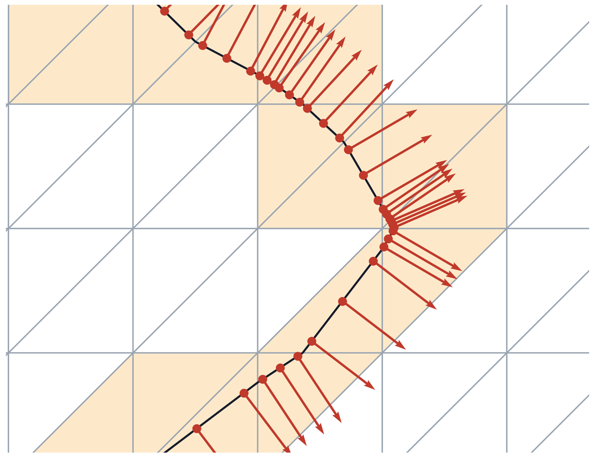
interface points and normals n on Γ ∩ T
Cut finite element methods · MINES Paris – PSL
27
Three minutes. The weak form has two parts so far and each is one function of minicut. mc.stiffness integrates the gradient term over Ω with the volume rule; mc.nitsche integrates the Nitsche terms over Γ with the interface rule and returns the matrix and its right-hand side contribution (the g terms); the arrows are the normals n of the interface rule that the Nitsche terms use. The right-hand side f = 1 is integrated by mc.load. Inside, each function evaluates the integrals at the quadrature points and scatters the local matrices: short functions in minicut.py, which the students can read in the notebook; writing the Nitsche terms is their exercise. Nitsche's penalty is gamma / h with gamma = 40. Question for the room: is this matrix safe? The next step shows when it is not.
28. What is the condition number?
What is the condition number?
The condition number of the matrix A is the ratio of its extreme eigenvalues, in absolute value:
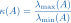
Large κ: iterative solvers (CG, GMRES) need many iterations
Large κ: round-off errors grow, about log₁₀ κ of the 16 digits of double precision are lost
On a fitted mesh of size h, it grows like
Fitted mesh
The constant C depends on the quality of the mesh, which the mesh generator controls.
Cut mesh
The cut cells can have any shape. Does C now depend on where the boundary falls?
Next: an experiment
Slide a disc across a fixed mesh and watch κ, the accuracy and the solver cost.
Cut finite element methods · MINES Paris – PSL
28
Three minutes. Recall from lecture 3 that conditioning controls two things: how many iterations a Krylov solver needs and how many digits survive round-off. For a quasi-uniform mesh the condition number of the stiffness matrix grows like h to the minus two, with a constant that depends only on mesh quality. The question of this block is whether a cut mesh keeps this property. The cut cells are not chosen by a mesh generator: where the boundary falls decides their shape. In this lecture kappa is computed as the ratio of the largest to the smallest singular value (numpy cond), which equals the ratio of eigenvalue magnitudes for a symmetric matrix.
29. Small cuts break the matrix
Small cuts break the matrix
For P1 the gradients of the hat functions ψi are constant, so the element matrix on T ∩ Ω is the full one scaled by η:
A DOF that sees Ω only through a sliver gets matrix entries proportional to η
The smallest eigenvalue tends to 0 with η, so κ(A) grows roughly like 1/η
Example from the sweep
η = 1.3·10⁻⁸ gave κ(A) = 2.0·10⁹
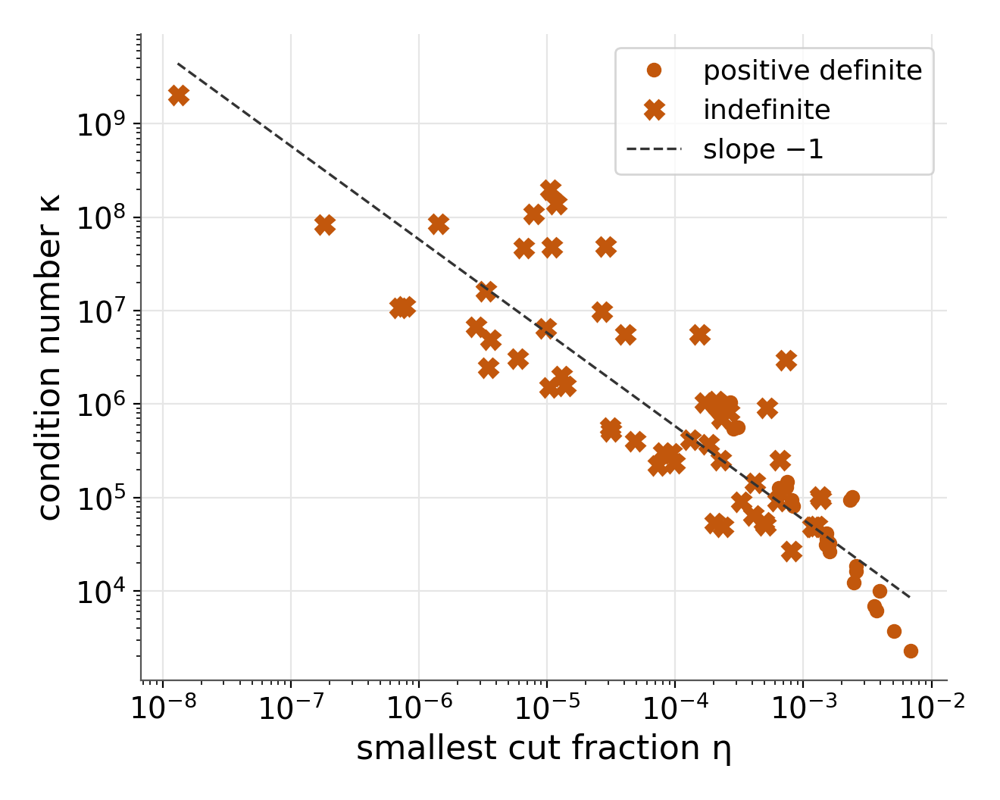
81 positions of a disc on a fixed mesh, no stabilisation (minicut). η = smallest |T ∩ Ω| / |T| over the cut cells.
Cut finite element methods · MINES Paris – PSL
29
Three minutes. Notation: psi_i are the hat functions (called phi_i in lecture 2; renamed here because phi is the level set). The argument is exact for P1 because the gradient is constant on a triangle: the element matrix restricted to T intersect Omega is eta times the full element matrix. So any DOF whose support meets Omega only in slivers has a tiny diagonal entry. The scatter plot comes from the sweep of the next slide: each point is one position of the disc, the horizontal axis is the smallest cut fraction eta over the cut cells, the vertical axis the condition number. The dashed line has slope minus one: the trend is roughly 1/eta, with scatter of one to two orders of magnitude, so say roughly and not exactly. Crosses mark matrices that have negative eigenvalues: for Nitsche without stabilisation, tiny slivers do not only hurt the conditioning, they make the matrix indefinite. Connect to lecture 3: conditioning drives iteration counts and round-off.
30. The numerical experiment
The numerical experiment
Poisson problem on a disc Ω with a known solution, so the error can be measured
P1 elements on a 20 × 20 triangle mesh of [−1, 1]²; the disc centre (0.037, −0.021) is off the grid, so cuts never line up with the mesh
Nitsche with γ = 40, and a ghost penalty with γg = 0.1 when we stabilise
Sweep: 81 radii from r = 0.50 to 0.60, one cell width in total. For each radius: assemble, compute the eigenvalues, κ, the error and the GMRES iterations
Blue: cells inside Ω. Orange: cut cells. Active mesh = blue + orange.
Cut finite element methods · MINES Paris – PSL
30
Two minutes. Set up the experiment before showing the results. The problem is the Poisson problem from the Nitsche slides: minus Laplacian u = f in Omega, u = g on Gamma, with u exact = sin(pi x) sin(pi y), f = 2 pi squared u exact and g the trace of the exact solution, so the L2 error is computable. Omega is a disc inside the box [-1,1]^2, meshed with 20 by 20 squares each split into two triangles, so h = 0.1 (the box is a few cells larger than the disc on every side; outside cells are never assembled). The centre is slightly off the grid so that the cut pattern is generic. The solid circle is the boundary at r = 0.545, the dashed circles are r = 0.50 and r = 0.60, the two ends of the sweep: the boundary moves by exactly one cell width. For each of the 81 radii we assemble the Nitsche system, with and without the ghost penalty, and compute the eigenvalues of the dense matrix on the active DOFs, the condition number, the L2 error, and the number of GMRES iterations. Figure and data are computed with minicut (tools/cond_sweep.py in the repository); the same sweep is section 7 of the notebook.
31. Slide the boundary by one cell width
Slide the boundary by one cell width
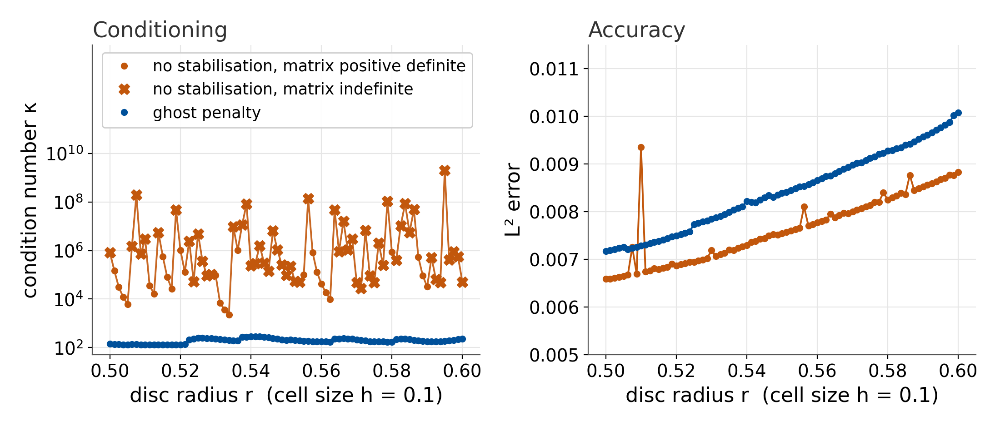
P1 on a 20×20 mesh of [−1,1]², disc of radius r, manufactured solution, Nitsche γ = 40, ghost γg = 0.1. Crosses: matrix not positive definite.
No stabilisation
κ from 2·10³ to 2·10⁹. Matrix indefinite for 55 of 81 positions. L² error between 6.6·10⁻³ and 9.4·10⁻³.
Ghost penalty
κ between 1.3·10² and 2.9·10². Error between 7.2·10⁻³ and 1.0·10⁻².
Same mesh, same equation: only the boundary moved, by one cell width. The error hardly notices; the matrix does.
Cut finite element methods · MINES Paris – PSL
31
Three minutes. This is the experiment. One fixed 20 by 20 mesh, h = 0.1, and a disc whose radius changes from 0.50 to 0.60, so the boundary moves by one cell width in 81 steps. For each position we assemble the Nitsche system with and without the ghost penalty. Left: the condition number. Without stabilisation it jumps over almost six orders of magnitude, from about 2e3 to 2e9, with no pattern in r. With the ghost penalty it stays between 130 and 290. Crosses mark the 55 positions where the matrix has negative eigenvalues. Right: the L2 error. It is between 6.6e-3 and 9.4e-3 without stabilisation and between 7.2e-3 and 1.0e-2 with it: the accuracy hardly changes, the error is controlled by the mesh and not by the bad cuts (correlation of log kappa with log error: 0.25). Ask the students: so why do we care? The next slides show the mechanism, and the cost: the solver. Say honestly that for a direct solve on this size the damage stays invisible in the error; for iterative solvers, for larger problems, for eigenvalue problems or when the matrix is indefinite, it does not. Data computed with minicut (dense eigenvalue computation on the active DOFs).
32. What goes wrong: a DOF nobody controls
What goes wrong: a DOF nobody controls
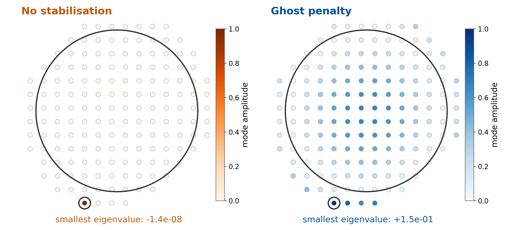
Mode of the smallest eigenvalue at the worst position of the sweep (r = 0.595). Without stabilisation it lives on one DOF that the sliver cell barely controls, and the eigenvalue is negative: the Nitsche matrix is no longer positive definite. With ghost penalty the mode is smooth and the eigenvalue is +0.15.
Cut finite element methods · MINES Paris – PSL
32
Three minutes. We take the worst case of the sweep, r = 0.595, and look at the eigenvector that belongs to the smallest eigenvalue. Each dot is a degree of freedom on the active mesh and its colour is the amplitude of the mode. Without stabilisation the mode is a single spike on a DOF at the bottom of the mesh, at (-0.2, -0.7), a vertex outside the disc whose cells contain only a tiny piece of it (volume fractions 1e-8 and 4e-8). The energy of that mode is almost zero, and because the Nitsche boundary terms are not sign definite the eigenvalue is slightly negative: minus 1.4e-8. So the matrix is not even positive definite and the condition number blows up to 2e9. With the ghost penalty the same eigenvector is a smooth, global function and the eigenvalue is +0.15, a normal size. Link back to the active-mesh slide: the DOFs outside the domain were the warning. (mc.smallest_mode in minicut computes this.)
33. Two ways to control the sliver
Two ways to control the sliver
The vertex outside Ω sees the domain only through a sliver. Left: its value is almost free. Middle: ghost penalty ties it to the neighbour. Right: aggregation removes it.
Cut finite element methods · MINES Paris – PSL
33
Two minutes. A picture in one dimension before the formulas. The shaded region is Omega and the thin orange strip is the sliver of the last cell that lies inside. The P1 function on that cell is determined by two values: the one inside Omega and the one at the vertex outside. The orange fans show that, without stabilisation, almost any value at the outside vertex fits the data because the sliver barely sees it. That is the free direction behind the tiny eigenvalue. Ghost penalty adds a term that ties the outside value to the neighbouring cell, so the function continues smoothly. Aggregation does something different: the outside vertex is not an unknown any more, the cell uses the polynomial of its neighbour. Both give the sliver control from a well-cut cell.
34. Ghost penalty: control from the neighbours
Ghost penalty: control from the neighbours
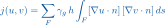
Sum over the facets F of cut cells (red); [·] is the jump across F
It ties the values on a sliver cell to the neighbouring cell, so control extends to the whole cell
Consistent: the jump vanishes for a smooth solution, so the accuracy is kept
γg is a dimensionless constant, independent of how the cut falls
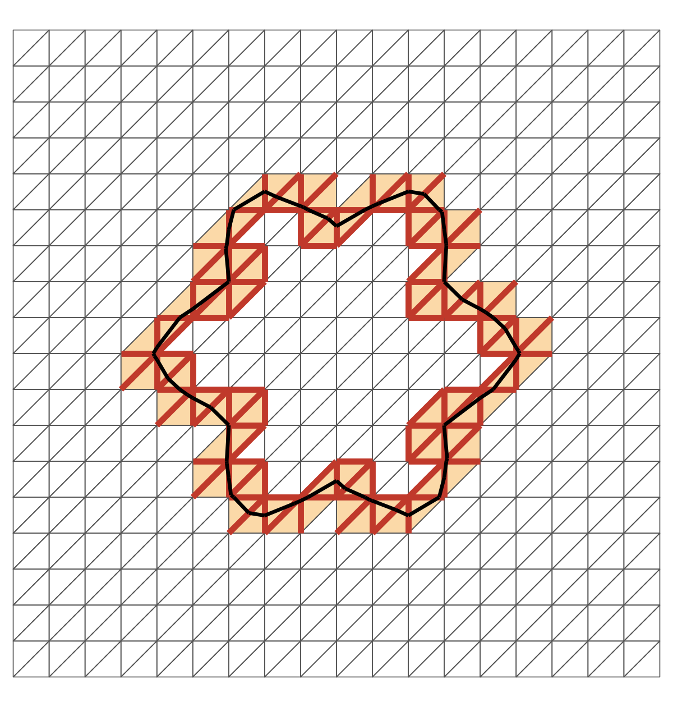
Cut finite element methods · MINES Paris – PSL
34
Three minutes. Intuition first (one-dimensional picture on the previous slide): a P1 function on a sliver is determined by its values at three vertices, but we only see a sliver of it. The ghost penalty forces the polynomial on the sliver cell to be close to the polynomial of its neighbour across each facet, so the sliver inherits control from a cell that is well inside. It also restores the coercivity of the Nitsche form independently of the cut position, which is why gamma can be chosen once. For P1 only the jump of the normal derivative is penalised; for higher degree, higher derivative jumps are needed. In minicut: mc.ghost_penalty(geom, gamma_g=0.1), one term on the facets geom.ghost_facets. Original reference: Burman 2010.
35. Cell aggregation: remove the unstable DOFs
Cell aggregation: remove the unstable DOFs
Flag the ill-posed cut cells: the fraction |T ∩ Ω| / |T| is below a threshold (0.25 here)
Attach each one to a well-cut root cell nearby: they form an aggregate
On an aggregate the function is the polynomial of the root cell, so the DOFs of the sliver cells disappear
Nothing is added to the form, and the system has fewer unknowns
Ghost penalty or aggregation?
Ghost penalty adds a term and keeps all DOFs. Aggregation changes the space and removes DOFs. Both restore a well-conditioned system: over the sweep κ stays between 1.2·10² and 2.2·10², and the matrix stays positive definite.
Three minutes. Aggregation is the second repair. We detect the cut cells whose domain fraction is below a threshold, here 0.25, and attach each of them to a well-cut root cell nearby, through the facets of the active mesh; the group is an aggregate. On an aggregate the finite element function is the polynomial of the root cell, extended over the whole aggregate, so the DOFs on the sliver cells are no longer independent unknowns: a dof that touches no well-cut cell is removed and its value is the root polynomial evaluated at it. In matrix form u = E u_good, where E has one column per remaining dof, and the reduced system is E^T A E u_good = E^T b. Nothing is added to the weak form, the matrix is smaller, and the sliver is controlled by construction. In minicut: mc.aggregate(geom, threshold) and mc.solve_aggregated. The figure is made on a coarse 12 by 12 mesh so the cells are visible: orange cells are ill-posed (18 of 48 cut cells), blue are their root cells, thick lines outline the aggregates; 7 dofs are removed. On the 20 by 20 sweep 8 to 15 dofs are removed and kappa is between 121 and 220. Reference: Badia, Verdugo, Martin, Computer Methods in Applied Mechanics and Engineering, 2018.
36. What it costs the solver
What it costs the solver
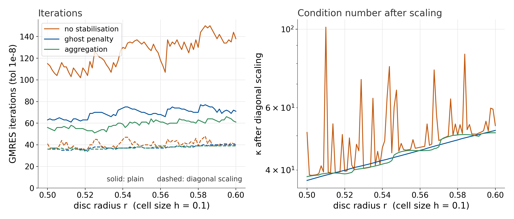
Both repairs cut the GMRES iterations from 102–150 to 61–77 (ghost penalty) and 51–66 (aggregation). A diagonal scaling brings all three to 34–48, but only the repairs keep κ below 52 and the matrix positive definite.
Cut finite element methods · MINES Paris – PSL
36
Two minutes. Link to lecture 3: the cost of the solve. The same 81 positions. Left: GMRES iterations to reduce the residual by 1e-8, with no preconditioner (solid) or with a diagonal (Jacobi) scaling (dashed). Without stabilisation 102 to 150 iterations, with ghost penalty 61 to 77, with aggregation 51 to 66. A simple diagonal scaling already removes most of the problem for all three, 34 to 48 iterations: it equilibrates the tiny rows of the sliver cells. Right: the condition number after scaling. With ghost penalty or aggregation it is between 37 and 52 for every position. Without stabilisation it is mostly small too, but it reaches 101 in the worst case, and the matrix is still indefinite for 55 of the 81 positions. Take-away: cheap preconditioning helps the solver, but the stabilisation is what makes the problem well posed. A direct solver is affected by the same near-singularity through the pivots. Dense eigenvalue and GMRES computations on the active DOFs with minicut (mc.gmres_iterations, mc.condition_number); no preconditioner other than the diagonal scaling was tested.
37. Example 1 · Step 5/6: small cuts, and the repair
aggregation sliver dofs = polynomial of a root cell, ET A E
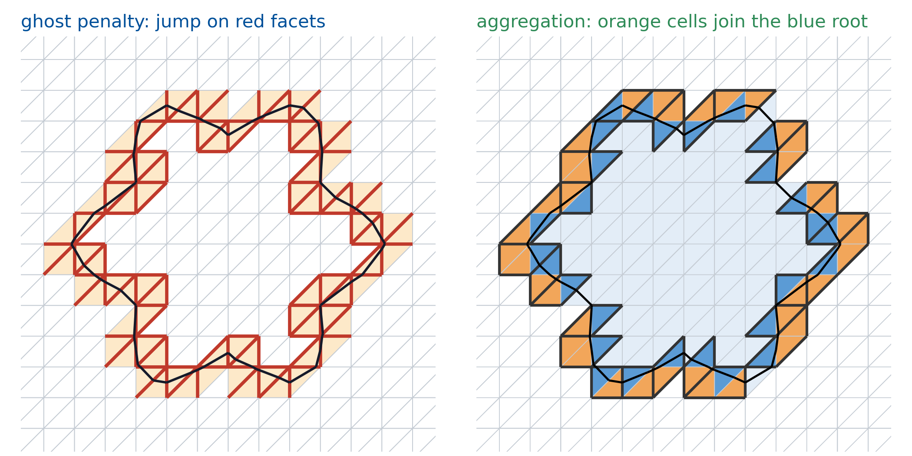
left: ghost_facets (red); right: aggregates (orange cells join the blue root)
Cut finite element methods · MINES Paris – PSL
37
Three minutes. The code for the stabilisation, with the numbers of this flower mesh. Without it the condition number is 5.4e4, with the ghost penalty 248, with aggregation 105. On this particular mesh the unstabilised matrix is still positive definite, but this is luck of the cut: the sweep of the conditioning block moved the boundary by one cell width and found indefinite matrices for 55 of 81 positions and condition numbers up to 2e9. Ghost penalty: mc.ghost_penalty adds the jump of the normal derivative on the facets of cut cells (red on the left), 122 facets here. Aggregation: mc.aggregate attaches every cut cell whose volume fraction is below 0.25 to a well-cut root cell; the dofs that touch no well-cut cell are removed (18 of 103) and their values are the polynomial of the root cell, which is a matrix E, so the reduced system is E^T A E. Both are tools that restore the conditioning, and both are consistent. The ghost penalty is the one we keep for the rest of the example.
38. Example 1 · Step 6/6: solve and look
Example 1 · Step 6/6: solve and look
u = mc.solve(geom, A, b) # on the active dofs only
outside = np.setdiff1d(np.arange(mesh.n_nodes),
geom.active_dofs)
len(outside) # 258 dofs left out (red)
mc.plot_solution(geom, u) # u_h on Ω_h itself
mc.area(geom) # 0.7316 (exact 0.7355)
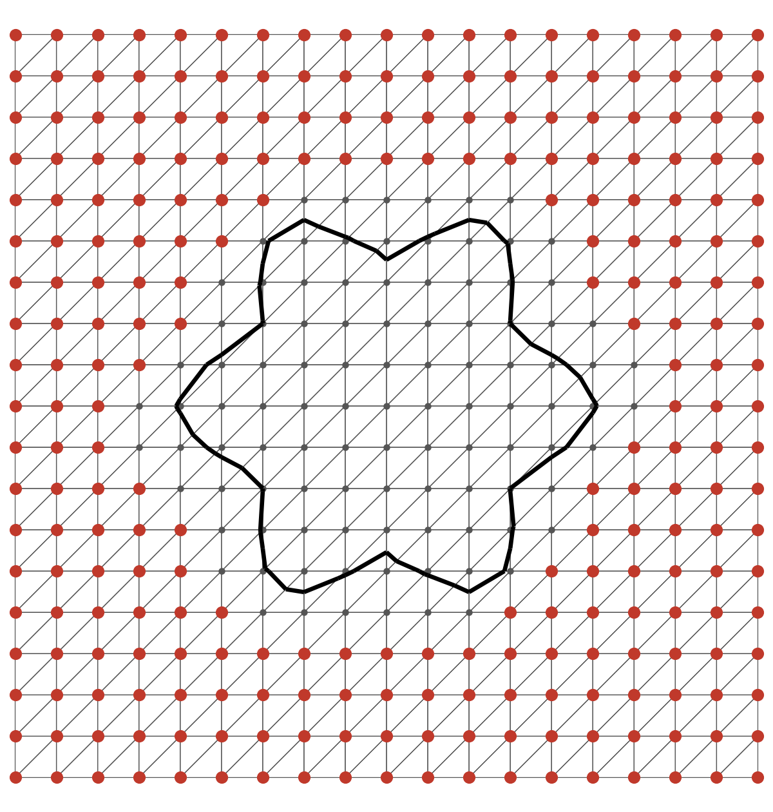
deactivated DOFs
solution on Ω
Cut finite element methods · MINES Paris – PSL
38
Two minutes. The matrix is assembled over the cut pieces only. The dofs that do not touch an active cell (the red points on the left; 258 of 361) have empty rows, so mc.solve removes them and solves the system on the 103 active dofs with a sparse direct solver. mc.plot_solution draws u_h on the sub-triangulation of Ω, so the picture shows the flower and not the box. As a check, the same code on a disc of radius 0.5 reproduces the exact solution (0.25 - r²)/4 with an L2 error of 1.1e-3. The next slide measures the convergence on the flower itself with a manufactured solution.
39. Example 1 · Convergence: the rates of the fitted mesh
Example 1 · Convergence: the rates of the fitted mesh
P1 elements on the flower, manufactured solution u = sin πx · sin πy, h = 0.2 … 0.0125: L² slope ≈ 2, H¹ seminorm slope ≈ 1, with or without stabilisation
Cut finite element methods · MINES Paris – PSL
39
Three minutes. Recall lecture 3: for P1 the error in L2 decreases like h squared and the H1 seminorm error like h. Here the flower of Example 1 is solved with a manufactured solution, u = sin(pi x) sin(pi y) with f and g taken from it, Nitsche gamma = 40, on meshes of 10, 20, 40, 80 and 160 squares per side. The measured L2 slopes are 1.93 (no stabilisation), 2.02 (ghost penalty) and 1.95 (aggregation); the H1 slopes are 0.99, 1.00 and 1.00. The same as on a fitted mesh. So the geometry is no longer paid for in accuracy. The stabilisation changes the conditioning (previous block) but not the rates. Computed with minicut (tools/lecture_figures.py); students reproduce it in the notebook.
40. Example 2 · From an image to a level set
Example 2 · From an image to a level set
1 Image
grey values from a CT scan, microscope or photo
2 Segment
threshold (or a classifier): solid matrix or pore
3 Distance
signed distance to the boundary, smoothed
4 Embed
interpolate φ on any background mesh, cut it
Synthetic scan made with minicut for this lecture (a disc of solid matrix, pores from thresholded filtered noise, scanner noise added); the same steps apply to a real scan. We solve in the matrix (blue), the pores are empty.
Cut finite element methods · MINES Paris – PSL
40
Four minutes. The point: an image is enough. Step 1: a greyscale image (here a synthetic micro-CT-like slice of a porous specimen made with mc.synthetic_scan: a light disc of solid matrix with dark pores, with added scanner noise; with a real scan the steps are identical). Step 2: segmentation gives a binary image: solid matrix or pore. Step 3: the signed distance to the boundary, negative in the matrix, smoothed over one or two pixels so the staircase of the pixels does not appear in the geometry. Step 4: interpolate this function on a background mesh that has nothing to do with the pixels (here 45 by 45 squares split into triangles). The cut cells are in orange, 856 of 4050 triangles. No mesh generator was used, and the pores are simply empty: they are outside Ω. Important caveat for questions: the geometry we compute with is the zero set of the interpolated function, so the mesh must be fine enough to resolve the thinnest feature.
41. Example 2 · The recipe in code
Example 2 · The recipe in code
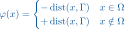
Threshold the image: B = true in the solid matrix (Ω), the pores are outside
Distance transform on both sides of the boundary, with the sign convention of the previous slide
Smooth over 1–2 pixels: the geometry should follow φ, not the pixel staircase
Interpolate on the background mesh: coarser mesh, coarser geometry
Same idea for CAD or STL: signed distance to the surface
from scipy import ndimage as ndi
B = scan > 0.5 # True = solid matrix
d_in = ndi.distance_transform_edt(B)
d_out = ndi.distance_transform_edt(~B)
phi_px = np.where(B, -d_in, d_out)
phi_px = ndi.gaussian_filter(phi_px, 1.5)
# minicut: these steps and the interpolation in one call
phi = mc.levelset_from_image(B, smooth=1.5)
mesh = mc.Mesh(45)
geom = mc.CutGeometry(mesh, phi)
Watch the resolution
A feature thinner than one cell can slip between mesh vertices: no sign change, no cut cell. Choose h from the thinnest feature you care about.
Cut finite element methods · MINES Paris – PSL
41
Three minutes. The recipe in code, with SciPy: distance transforms on both sides of the boundary, the sign convention negative inside, a light Gaussian smoothing, and a bilinear interpolation that lets phi be evaluated at any point, in particular at the nodes of the background mesh. mc.levelset_from_image does exactly these steps (and scales pixels to physical units); this is the code that made the previous figure and the next slide. CutGeometry evaluates phi at the nodes of the 45 by 45 mesh and cuts it. For CAD or STL geometries the signed distance to the surface does the same job. Resolution caveat: classification only looks at the signs of φ at mesh vertices, so features thinner than h can be missed.
42. Example 2 · Solve in the matrix, check
Example 2 · Solve in the matrix, check
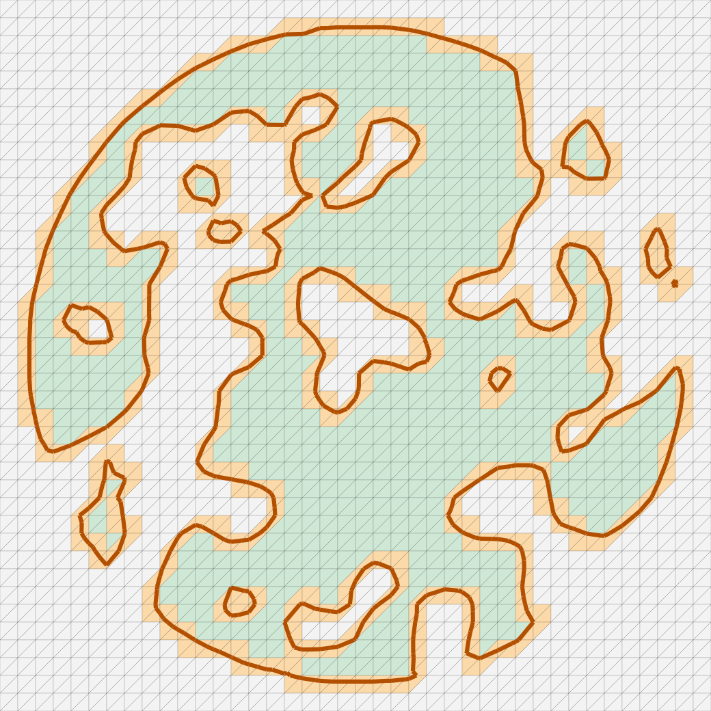
Cells of the 40 × 40 background mesh: green inside the matrix, orange cut; the pores are empty
uh in the matrix; the black line is Γ, around every pore and along the specimen edge
Check against a known solution
u = sin 2πx · sin 2πy, f = −Δu, u = g on Γ
n
cut cells
‖u − uh‖L²
rate
20
358
4.54·10-3
–
40
768
1.27·10-3
1.84
80
1556
3.41·10-4
1.90
Rate approaching two as the mesh resolves the pores
Why the ghost penalty
Condition number at n = 40: 5.6·107 without it, with 16 negative eigenvalues; 331 with it.
Cut finite element methods · MINES Paris – PSL
42
Three minutes. Same level set as the previous slides (the synthetic scan thresholded at 0.5), now taken all the way to a solution with minicut (P1, Nitsche with γ = 40, ghost penalty with γg = 0.1). The domain is the solid matrix: a disc of material with the pores cut out, so Γ is the outer edge and the boundary of every pore, and the pores are empty. Left: the classification of the 40 by 40 mesh, 768 cut cells. Middle: the solution of a manufactured problem, u = sin(2πx) sin(2πy) imposed on every boundary, pores included; a few small isolated pieces of matrix are separate components, which is fine for a Dirichlet problem. Right: the check. Error ratios 1.84 from n = 20 to 40 and 1.90 from 40 to 80: the rate approaches two as the mesh resolves the thin features and the pores (at n = 20 several features are thinner than a cell). No mesh was built for this geometry. The orange box is the link to the previous section: without the ghost penalty the condition number at n = 40 is 6·10⁷ and the matrix is indefinite (16 negative eigenvalues); with it, 331. Honest remark if asked: the error without ghost penalty is not larger (1.1e-3 against 1.3e-3 here); the ghost penalty repairs the matrix, not the accuracy. Variants: insulated pores need no boundary term at all (Neumann is natural), and pores filled with a second material make an interface problem. Numbers: tools/image_example.py.
43. Example 3 · Combining shapes with min and max
Example 3 · Combining shapes with min and max
Operation
Shape
Level set
Union
A ∪ B
min(φA, φB)
Intersection
A ∩ B
max(φA, φB)
Complement
outside A
−φA
Difference
A without B
max(φA, −φB)
Plate with a hole
φ = max(φbox, −φdisc): the box without the disc
A: box, B: ball
Union: min(φA, φB)
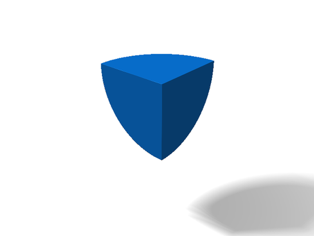
Intersection: max(φA, φB)
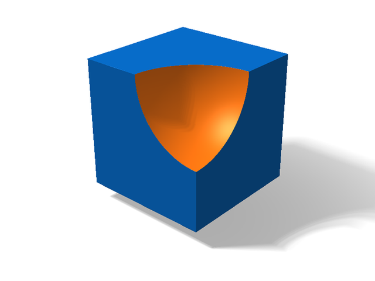
Difference: max(φA, −φB)
Blue surface: where φA decides. Orange surface: where φB decides.
Cut finite element methods · MINES Paris – PSL
43
Two minutes. The four pictures were rendered directly from the level set formulas of the table, for a box A and a ball B (blue surface: φA decides, orange: φB decides). Look at the difference: the orange surface is the ball seen from inside the bite. Engineers know CSG from CAD: here union is min and intersection is max, because inside means negative. Quick check with the room: a point inside A but outside B has φA < 0 and φB > 0, so it lies in the union (min is negative) but not in the intersection (max is positive). Closing the loop with the plate with a hole from lectures 1 and 2. Next: we use union and difference to build a rotor. Multiple level sets (several materials, several phases) are possible; mention only in passing.
44. Example 3 · Build a rotor from simple shapes
Example 3 · Build a rotor from simple shapes
φblade one blade: a tilted ellipse
min over five turned copies φblade(Rk−1x), each copy turned by 72°
min(φhub, φblades) union with a disc for the hub: the rotor
blade = ellipse((0.75, 0.5), 0.17, 0.055, 0.35)
hub = circle((0.5, 0.5), 0.12)
rotor = union(hub, *[rotate(blade, 2*pi*k/5) for k in range(5)])
Cut finite element methods · MINES Paris – PSL
44
Three minutes. The second example: a turbine rotor, built from simple level sets, then turned, then tuned. First the build. One blade is a tilted ellipse, as in the example code (an approximate signed distance). The blades of the rotor are copies of this blade turned by multiples of 72 degrees: the only new function is rotate, which turns a shape by evaluating its level set at the back-rotated point, φ(R⁻¹(x − c) + c). The union is the pointwise minimum, as on the previous slide, and the hub is a disc added by another union. Each panel is the same 40 by 40 background mesh: the rotor is 0.187 in area and cuts 332 cells; nothing is meshed. The whole construction is three lines of the example code. Next slide: turn it, through a hot-gas jet.
45. Example 3 · Turn it: same mesh, new cut
Example 3 · Turn it: same mesh, new cut
The load stays, the rotor turns
At each angle θ: −Δu = f in Ωθ, u = 0 on Γθ. f is a hot-gas jet fixed in space, u is the temperature rise above the coolant (quasi-static: one steady solve per angle).
rotor_t = rotate(rotor, theta) then cut, assemble, solve as before
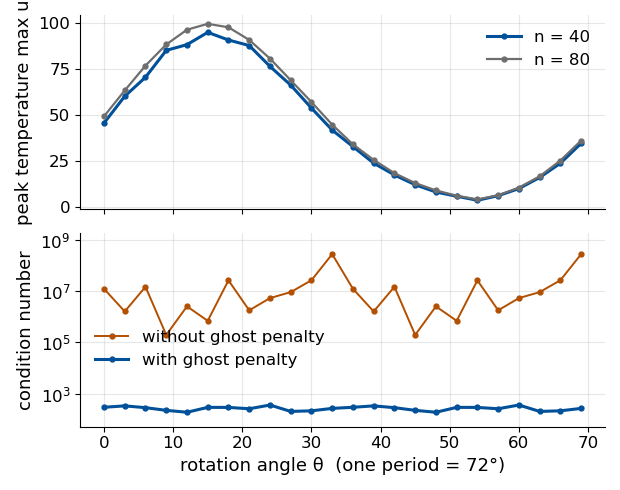
The solution changes with θ
Peak temperature from 4 to 95 within one turn. Condition number: 184 to 354 with the ghost penalty, 2·105 to 3·108 without.
Cut finite element methods · MINES Paris – PSL
45
Three minutes. Play the animation first and ask what moves and what does not. The grey background mesh never changes; the rotor boundary turns, so the orange cut cells change at every frame, and the temperature field changes with them. Physical story: a rotor turns through a hot-gas jet. The jet is a heat source f fixed in space (the red dashed circle marks twice its width); the boundary of the rotor is kept at the coolant temperature, u = 0; u is the temperature rise. At each angle we solve a steady Poisson problem, so this is a quasi-static picture; a real turbine would need the time-dependent heat equation with the solution carried along with the body, which is a natural extension. Why a fixed load? If the load turned with the rotor, nothing would change: the rotation of a symmetric problem gives the same answer at every angle, and the example would be boring. Right, top: the peak temperature over one period (72 degrees, the five-fold symmetry): about 95 when a blade is in the jet (worst angle about 15 degrees), about 4 when the jet falls between two blades. The n = 80 curve (grey) is within 5 percent of the n = 40 curve (100 at the worst angle). Right, bottom: the condition number at the same 24 angles. With the ghost penalty it stays between 184 and 354. Without it, between 2·10⁵ and 3·10⁸, and the matrix is indefinite for some angles (up to 11 negative eigenvalues): in a moving problem you cannot choose where the cuts fall, which is why the ghost penalty came first. The temperature unit is arbitrary: f has amplitude 10⁵ at the jet centre.
46. Example 3 · A simple shape optimisation
Example 3 · A simple shape optimisation
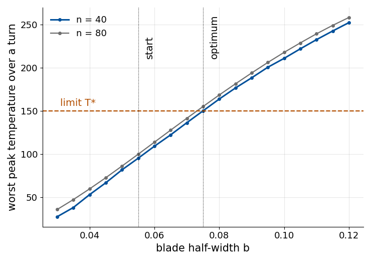
The optimum hardly depends on the mesh
b* = 0.075 at n = 40, 0.073 at n = 80. Cost at n = 40: 7 evaluations of the worst case, each 24 cut-and-solves, 5 s in total.
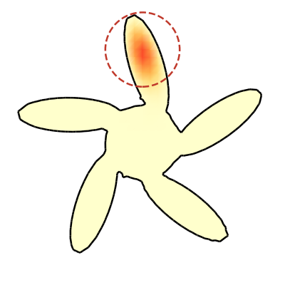
start: b = 0.055, peak 95, A = 0.19
optimum: b = 0.075, peak 150, A = 0.24
Design to a temperature limit
Widest (strongest) blade with peak temperature ≤ T* = 150 at every angle. The peak grows with b: the optimum is where the worst angle just reaches T*.
T_worst = lambda b: max(peak(b, t) for t in angles)
Three minutes. The simplest shape optimisation we can do in the time: one design parameter, the blade half-width b, and one requirement. Wider blades are stronger, but they also get hotter in the jet. We want the widest blade whose temperature stays below the limit T* = 150 at every angle of the turn. peak(b, t) is the maximum of u for the rotor with half-width b turned by t: a new level set, a cut of the same mesh and a solve. T_worst(b) is the maximum over the 24 angles of one period. Because the peak grows with b, the optimum is where T_worst(b) = T*: a one-dimensional root finding with scipy's brentq. Without the temperature limit the widest blade would always win, and without a requirement on strength the thinnest blade would always win: that is why the problem is posed as a limit. It takes 7 evaluations of T_worst, so 168 cut-and-solve steps and 5 s at n = 40 (17 s at n = 80): no meshing in the loop. Result: b* = 0.0750 at n = 40, 0.0731 at n = 80 (a 2.5 percent difference; the peak itself differs by 5 percent between the two meshes, see the previous slide); the worst angle is about 15 degrees for both designs. The area grows from 0.187 to 0.238. Real shape optimisation has many parameters or a free boundary and uses the gradient of the objective with respect to the shape (shape derivative), which costs about one more solve; the next slide shows the same loop for a wing. Homework: add the number of blades as a second parameter.
47. Example 3 · The same loop for a wing
Example 3 · The same loop for a wing
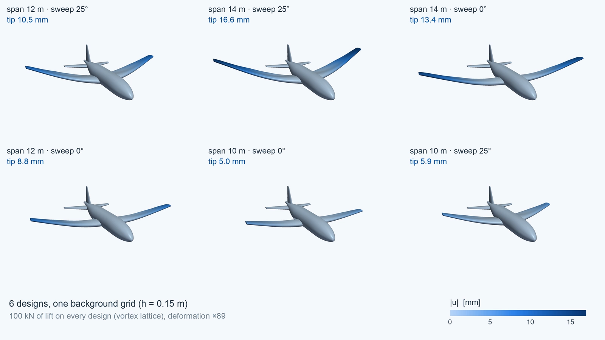
6 designs, one grid
Span and sweep change from design to design
Same background mesh, h = 0.15 m, for all of them
Only the level set φ(θ) depends on the design parameters θ
The optimiser can change the shape thousands of times
Cut finite element methods · MINES Paris – PSL
47
Two minutes. The picture is a video (it plays in presentation mode and loops; click to pause). It shows a 3D aircraft skin where the wingspan and the sweep are changed with sliders: for each new shape only the level set changes, the shape is cut from the same background grid and solved again, and the clip ends on the six-design overview. Say what to look at: the grid never changes. Figure and video from the JSO 2026 talk: six wing designs, 100 kN of lift on each, one background grid with h = 0.15 m. The geometry of each design is a level set depending on parameters. This is what makes shape optimisation affordable: no meshing in the loop. The rotor of the previous slide is the same loop with one parameter; here there are several (span, sweep) and a gradient drives the optimiser. We will not go into the optimisation; the point is the workflow.
48. Try it yourself
Try it yourself
Now: the notebook, no install
cutfem_lecture.ipynb: a cut FEM in pure Python (numpy, scipy, matplotlib), runs on any laptop
You write the Nitsche terms, sweep the radius and switch the ghost penalty on
Same errors and condition numbers as CutFEMx on the same mesh
Files: cutfem_lecture.ipynb and minicut.py · questions:
Later: the real thing, CutFEMx
Conda environment with FEniCSx 0.11, then build CutCells, runintgen and CutFEMx: docs/getting-started/installation.md at github.com/sclaus2/CutFEMx
On Windows, use WSL2 (Linux)
Run python/demo/demo_poisson.py, then change one thing: a disc of radius 0.5, γg = 0, or your own image
Cut finite element methods · MINES Paris – PSL
48
Three minutes. Hands-on part: students open the notebook (cutfem_lecture.ipynb, with minicut.py next to it). It needs only numpy, scipy and matplotlib, so there is no installation problem on Windows laptops. It follows the lecture: level set, cut, quadrature, Nitsche (they write the terms), convergence, the radius sweep that shows the small-cut ill-conditioning, and the ghost penalty. On the same mesh it reproduces the CutFEMx errors and condition numbers. The real CutFEMx is the homework: the installation is source-based (repository documentation), on Windows through WSL2. Before the lecture check that the repository is public and that the students know where the notebook files are.
49. Where cut methods are used
Where cut methods are used
Additive manufacturing
Layer-by-layer growth, laser ablation: the shape evolves, the mesh does not
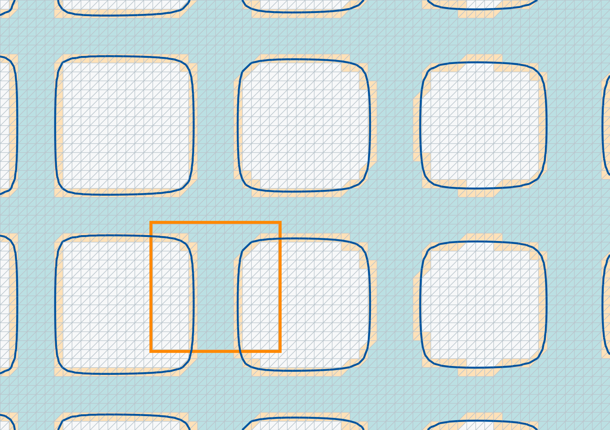
Images and lattices
CT scans, porous materials and lattices simulated straight from the geometry
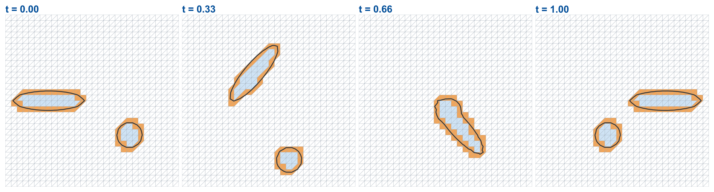
Moving interfaces
Bubbles, drops, multi-phase flows, contact between bodies
Shape and topology optimisation
The shape changes at every iteration on the same background mesh
Cut finite element methods · MINES Paris – PSL
49
Three minutes. Where the method is used. The pictures are figures from this lecture and from the JSO 2026 talk: lattices (cut mesh of a lattice), moving bodies (illustration made for this lecture) and six wing designs on one grid. The additive manufacturing card has no picture yet: replace the icon with an image from your own talks. Candidates: laser ablation and additive manufacturing slides in INRIA_CutFEM.pptx (slides 57 to 67) and CutFEM_ALM.pptx, the multi-phase viscoelastic flows (slides 30 to 37), contact and braided composite (slides 39 to 49), and the lattice and compliance-optimisation demos in python/demo.
50. Limits and open questions
Limits and open questions
Geometry accuracy
Curved, high-order cuts are harder than linear ones
Stability
Accuracy and conditioning independent of the cut, with few parameters
Several level sets
Multi-material domains need rules for every combination of signs
Cost at scale
Quadrature generation and parallel load balance in 3D
Cut finite element methods · MINES Paris – PSL
50
Two minutes. Be honest about limits; this is also the research agenda at ONERA (cut-cell construction and quadrature generation, bad-cut repair, parallel runs). Good place to invite questions from curious students.
51. Key ideas
Key ideas
1
Describe Ω implicitly with a level set φ (formula, CAD/STL or image) and mesh a simple box
2
Only cut cells need new work: integrate on T ∩ Ω and Γ ∩ T
3
Impose Dirichlet conditions weakly with Nitsche’s method
4
Small cuts make κ jump by orders of magnitude: stabilise with ghost penalty or aggregation
5
It is still the Galerkin method, with the convergence rates of the week
51
Three minutes. Read the five lines aloud, then ask one student to restate one in their own words. Close the loop with slide 4: three of the six steps changed, plus one new stabilisation step.
52. questions
Questions?
Susanne CLAUS · ONERA
DTIS/MACI, ONERA, Palaiseau, France
Lecture code: minicut and the notebook (cutfem-lecture)
Three minutes for questions; the buffer in the schedule. If time is left over, go back to the demo and change one parameter live.
53. Further reading
Further reading
Nitsche (1971), Abh. Math. Sem. Univ. Hamburg 36: the weak imposition of boundary conditions
Hansbo and Hansbo (2002), An unfitted finite element method, based on Nitsche’s method, for elliptic interface problems, CMAME 191
Burman (2010), Ghost penalty, C. R. Math. Acad. Sci. Paris 348